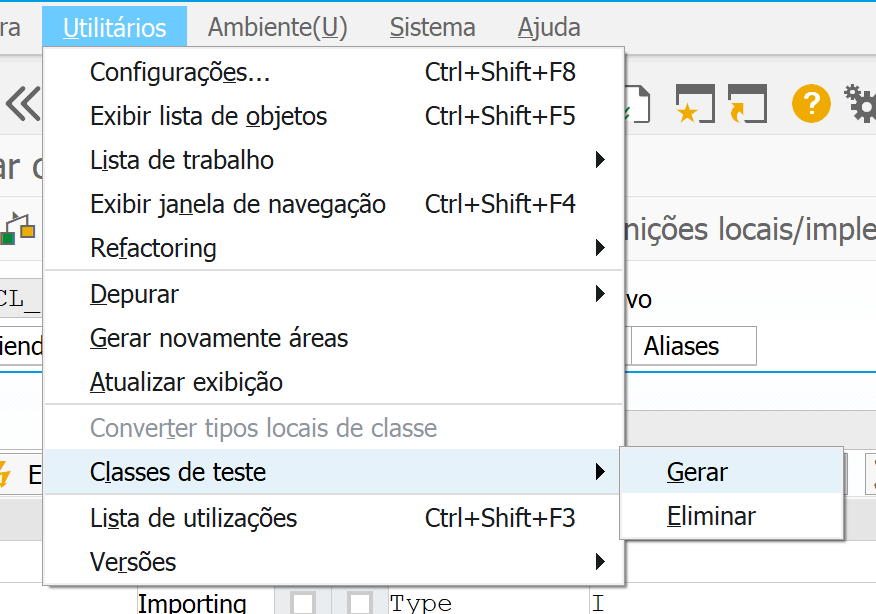
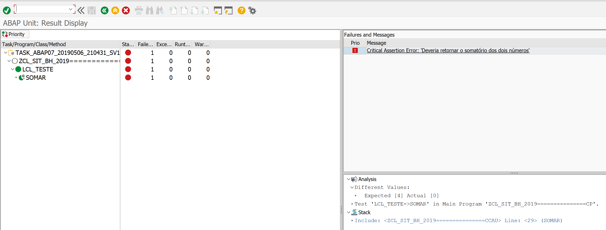

ABAP Unit
Automatizando o trabalho chato
SAP Inside Track BH - 2019
Quem sou eu?
- Meu nome é Valdir Mendes
- Estudante/amante de desenvolvimento de software e tecnologia
- Arquiteto de software na Seidor Veritas
- Organizador do Meetup SAPiens BH
Novo método de desenvolvimento

Testar software é importante?
Testes do funcional/cliente
Desculpas para não testar
- Demora muito para criar e executar
- Alto Custo
- Repetitivo
- Chato de executar manualmente e passível de erros
- Não tenho/conheço todos os cenários
- "Só ocorre em PRD"
- Não estava previso na estimativa
Como fazemos hoje?
- Nova demanda
- Codificar/implementar
- Execução de teste (quando dá)
- Debugar
- Corrigir bugs
- Loop até "KBAR"!
E como ficamos?
Quanto tempo eu gasto?
- Codificando regras que não sei onde irá impactar?
- Aguardando alguém testar?
- Aguardando cenário de teste?
- Executando testes manuais, repetitivos e passíveis de erro?
- Debugando para encontrar erros (pré e pós desenvolvimento)?
- Corrigindo bugs usando tentativa e erro? (go horse)
Quem nunca?
No que isso impacta?
Na garantia/confiança do seu trabalho!
Dá para melhorar?
Sim!
Como?
Fazer a máquina executar os testes!
Testes unitários e ABAP Unit
DevOps
Testes Unitários
É uma abordagem de teste de software onde as unidades/componentes de um software são testadas individualmente.
Pirâmide de testes
Custo e tempo de testes
Testes Unitários Automatizados
Objetivos
- Encontrar erros o mais breve possível
- Escrever uma vez, executar frequentemente
- Repetitivo: A máquina executa e analisa os resultados
- Garantir que o código desenvolvido funcione conforme o esperado
- A máquina não comete erros ao executar
ABAP Unit
É uma ferramenta de teste integrada ao ambiente de desenvolvimento ABAP utilizada para executar testes de unitários. Pode ser executada manualmente ou automaticamente.
Fonte: Documentação SAPComo funciona?
Fazer o que já fazemos hoje, porém de forma automatizada
Nosso fluxo atual
Fluxo de automatização
SAP GUI
Criação da classe
Método
Parâmetros do método
Código do método
Geração da classe de teste
Assistente da geração
Criar uma nova classe de teste
Ir para classes de teste (quando já exite)
Código dos testes
Rodar os testes
Testes passam
Se altero a regra...
Testes falham
Eclipse
+
ABAP Development Tools (ADT)
Código fonte
Ir para classes de teste
Código dos testes
Testes passam
Testes Falham
Dúvidas?
- Ative o Bluetooth no dispositivo móvel.
- Abra o app do Linkedin
- Toque em Minha rede
- Toque em Na sua área